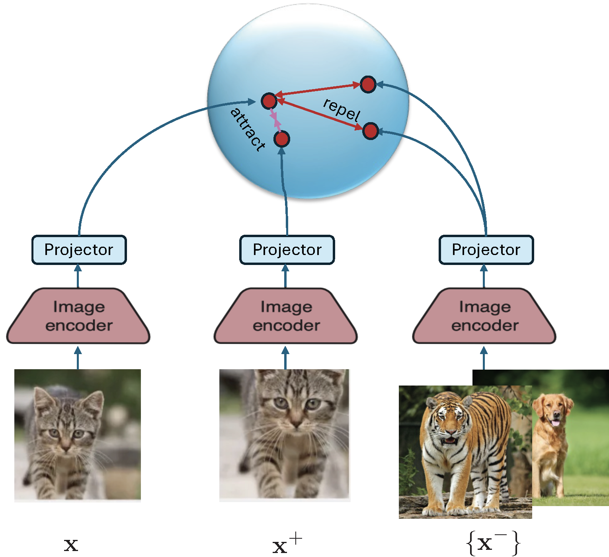
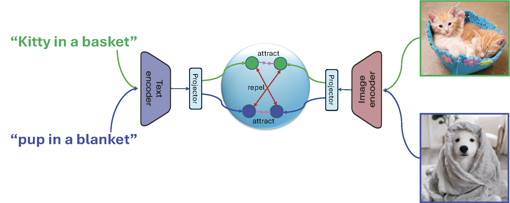
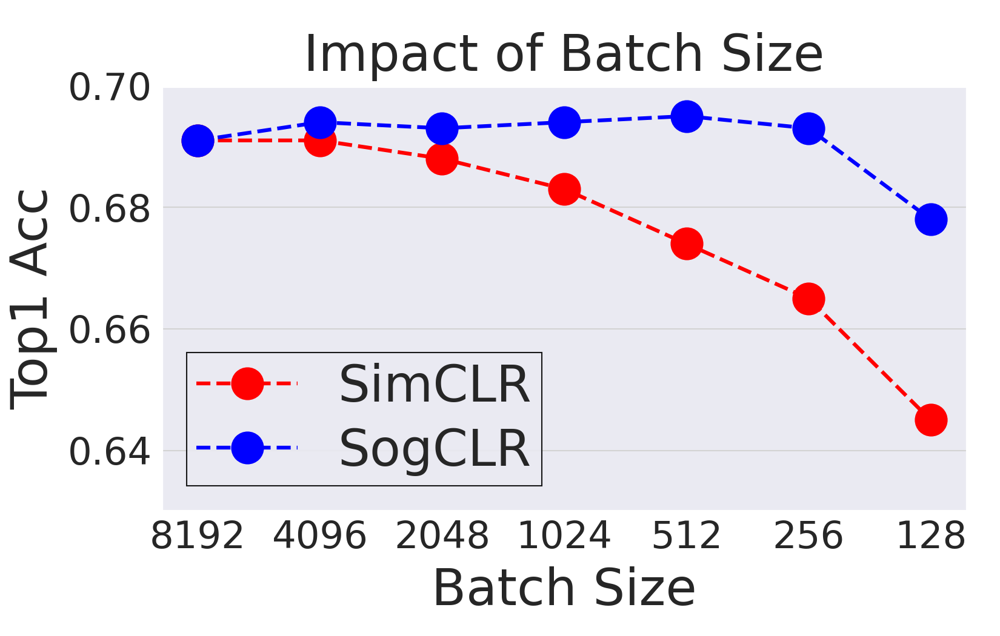
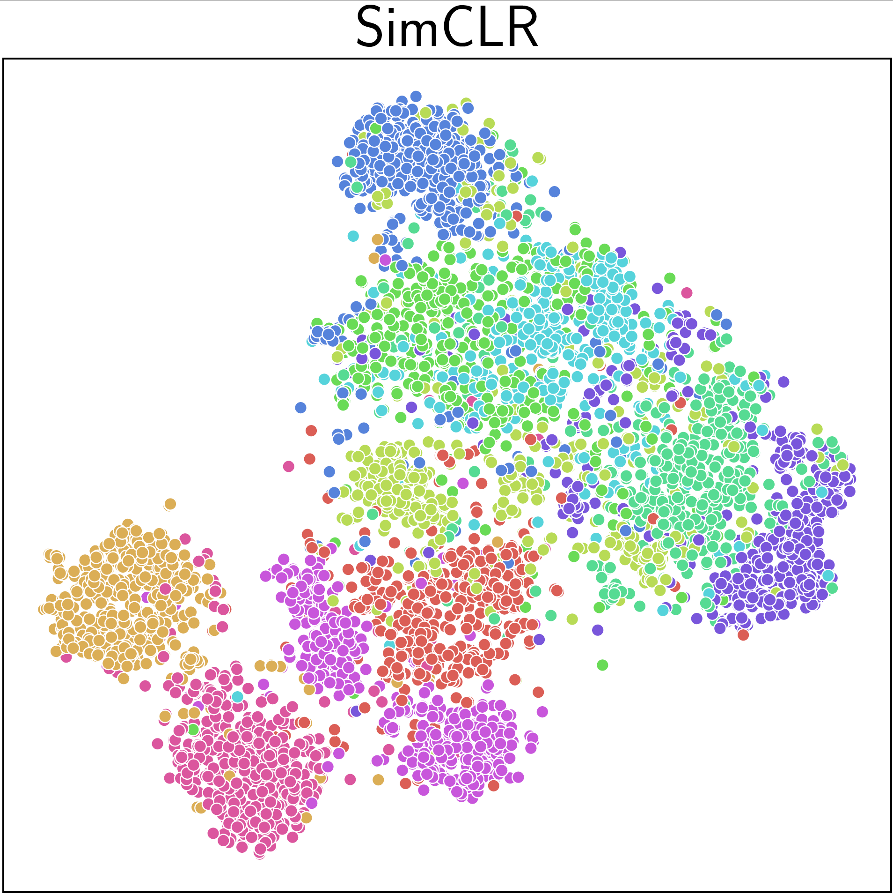
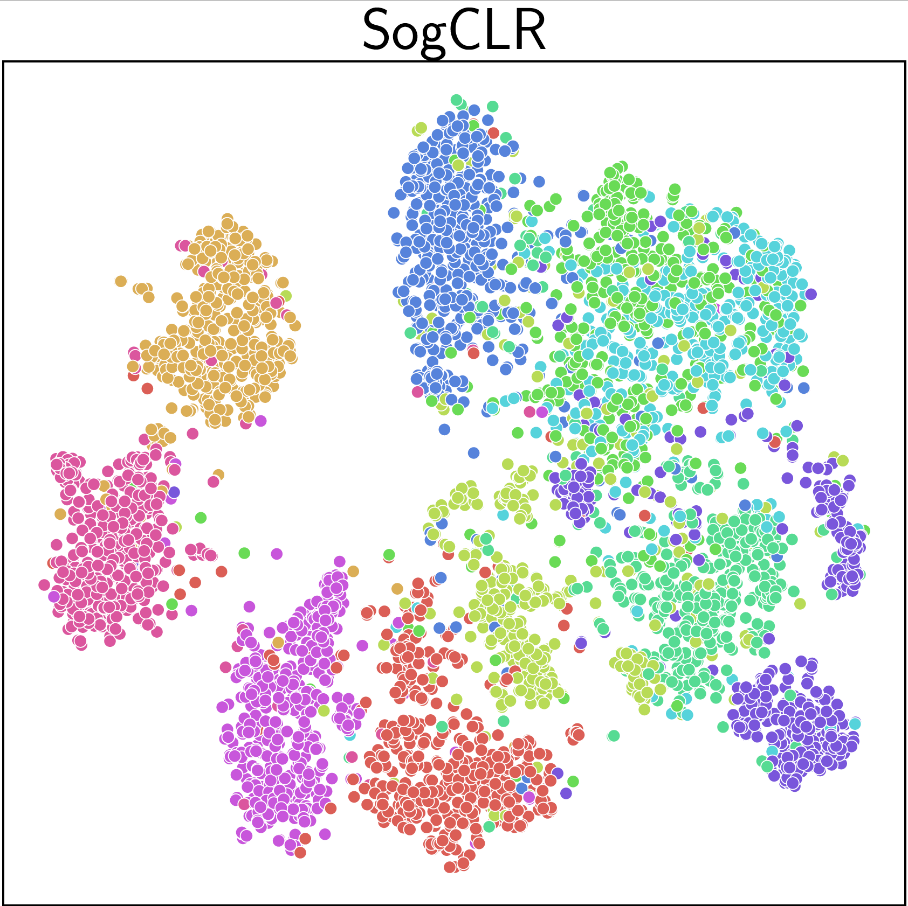
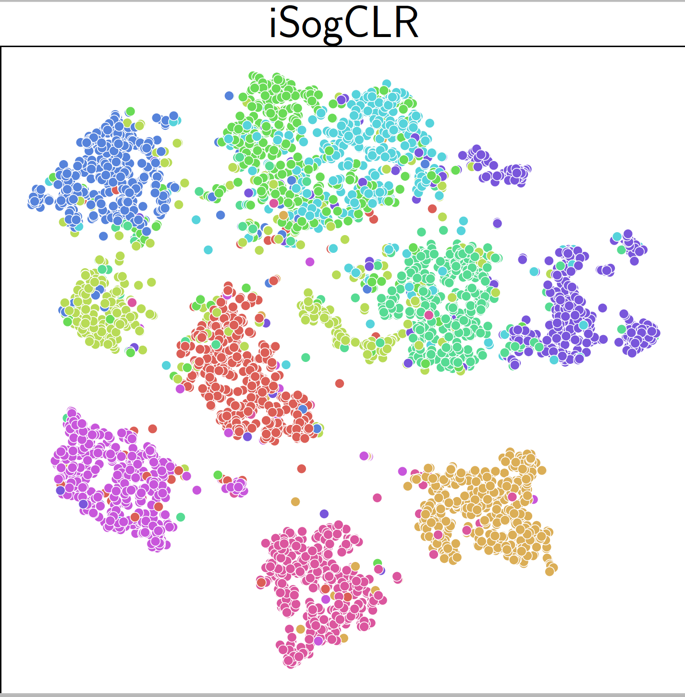
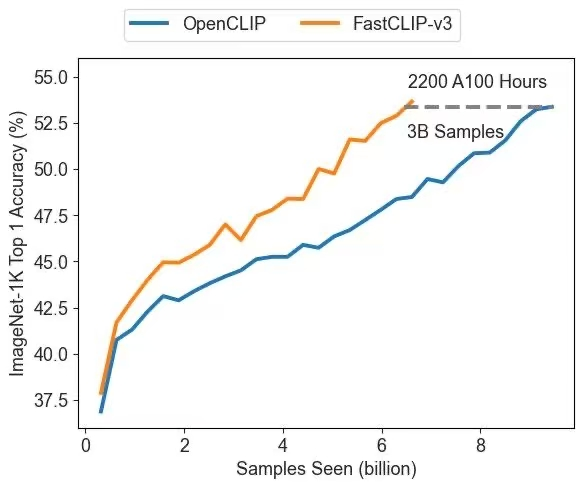

Section 6.5 Discriminative Pretraining of Representation Models
In Chapter 2, we briefly introduced the core concepts of representation learning and highlighted its growing significance in modern AI systems. In contemporary AI, representation models are learned through Self-supervised learning (SSL), which has emerged as a powerful paradigm for learning representation models without the need for labeled data. Among the most prominent frameworks within SSL is contrastive learning, which forms positive pairs by applying different augmentations to the same data sample or taking different views of the same data, while treating different data as negatives. In this section, we delve deeper into contrastive learning, with a focus on its applications to both unimodal and multimodal representation learning.
6.5.1 Mini-batch Contrastive Losses
A contrastive loss is used to pull the representations of positive pairs closer together, while pushing apart those of negative pairs in the embedding space. One of the most widely used contrastive losses is the so-called InfoNCE loss, which operates over samples within a mini-batch. Below, we illustrate its use in two well-known contrastive learning methods and discuss its limitations.

SimCLR
We now illustrate the contrastive loss in the context of visual representation learning by the well-known method SimCLR. The framework is illustrated in Figure 6.18. The model typically consists of a deep encoder backbone followed by a small projector, often implemented as a multi-layer perceptron (MLP). During downstream tasks, the projector is discarded, and the encoder’s output is used as the final representation. The inclusion of the projector during training improves the quality and transferability of the learned embeddings by helping disentangle the contrastive learning objective from the representation space.
Let \((\mathbf{x}, \mathbf{x}^+) \sim \mathbb{P}_+\) denote a positive pair, which are different augmented copies from the same data. For a mini-batch \(\mathcal{B} = \{\mathbf{x}_1, \ldots, \mathbf{x}_B\}\), each anchor \(\mathbf{x}_i\) is paired with an augmented positive sample \(\mathbf{x}_i^+\). The resulting mini-batch-based contrastive loss (commonly referred to as the InfoNCE loss) for anchor \(\mathbf{x}_i\) is given by:
\[\begin{align}\label{eqn:infonce} L_{\mathcal{B}}(\mathbf{w}; \mathbf{x}_i, \mathbf{x}_i^+) = -\log\frac{\exp\left(\frac{h(\mathbf{w};\mathbf{x}_i)^{\top}h(\mathbf{w}; \mathbf{x}^+_i)}{\tau}\right)}{\exp\left(\frac{h(\mathbf{w};\mathbf{x}_i)^{\top}h(\mathbf{w}; \mathbf{x}^+_i)}{\tau}\right) + \sum_{\mathbf{x}_j\in \mathcal{B}^-_i} \exp\left(\frac{h(\mathbf{w}; \mathbf{x}_i)^{\top}h(\mathbf{w}; \mathbf{x}_j)}{\tau}\right)}, \end{align}\]
where \(h(\mathbf{w}; \mathbf{x})\) denotes the normalized embedding of input \(\mathbf{x}\), i.e., \(\|h(\mathbf{w}; \mathbf{x})\|_2 = 1\), and \(\tau > 0\) is the temperature parameter. The set \(\mathcal{B}^-_i\) includes all negative samples in the mini-batch excluding \(\mathbf{x}_i\) and its augmentations. The positive pair can be removed from the denominator.

CLIP (Contrastive Language–Image Pretraining)
CLIP is a multimodal representation model that aligns images and text via contrastive learning on large-scale image–caption datasets. It comprises an image encoder and a text encoder, each followed by a corresponding projector, all jointly trained through contrastive learning (see Figure 6.19). CLIP models are typically trained on millions to billions of image–caption pairs, denoted as \(\mathcal{S} = \{(\mathbf{x}_1, \mathbf{t}_1), \ldots, (\mathbf{x}_n, \mathbf{t}_n)\}\). Let \(h_1(\mathbf{w};\cdot)\) denote the image encoder and \(h_2(\mathbf{w}; \cdot)\) denote the text encoder, which outputs normalized embedding vectors.
With a mini-batch \(\mathcal{B} = \{(\mathbf{x}_1, \mathbf{t}_1), \ldots, (\mathbf{x}_B, \mathbf{t}_B)\}\), a mini-batch-based contrastive loss for each image \(\mathbf{x}_i\) is given by:
\[\begin{align*} L_{\mathcal{B}}(\mathbf{w}; \mathbf{x}_i) = -\log\frac{\exp\left(\frac{h_1(\mathbf{w}; \mathbf{x}_i)^{\top}h_2(\mathbf{w}; \mathbf{t}_i)}{\tau}\right)}{\exp\left(\frac{h_1(\mathbf{w}; \mathbf{x}_i)^{\top}h_2(\mathbf{w}; \mathbf{t}_i)}{\tau}\right) + \sum_{\mathbf{t}_j\in \mathcal{B}^-_{2i}} \exp\left(\frac{h_1(\mathbf{w}; \mathbf{x}_i)^{\top}h_2(\mathbf{w}; \mathbf{t}_j)}{\tau}\right)}, \end{align*}\]
where the set \(\mathcal{B}^-_{2i}\) includes all negative texts in the mini-batch excluding \(\mathbf{t}_i\). Similarly, a mini-batch-based contrastive loss for each caption \(\mathbf{t}_i\) is given by:
\[\begin{align*} L_{\mathcal{B}}(\mathbf{w}; \mathbf{t}_i) = -\log\frac{\exp\left(\frac{h_1(\mathbf{w}; \mathbf{x}_i)^{\top}h_2(\mathbf{w}; \mathbf{t}_i)}{\tau}\right)}{\exp\left(\frac{h_1(\mathbf{w}; \mathbf{x}_i)^{\top}h_2(\mathbf{w}; \mathbf{t}_i)}{\tau}\right) + \sum_{\mathbf{x}_j\in \mathcal{B}^-_{1i}} \exp\left(\frac{h_1(\mathbf{w}; \mathbf{x}_j)^{\top}h_2(\mathbf{w}; \mathbf{t}_i)}{\tau}\right)}, \end{align*}\]
where the set \(\mathcal{B}^-_{1i}\) includes all negative images in the mini-batch excluding \(\mathbf{x}_i\). Backpropagation is then performed on the two mini-batch contrastive losses to compute gradient estimators, which are summed to update the model parameters.
CLIP enables zero-shot image classification, cross-modality retrieval and plays a crucial role in text-to-image generation by guiding models to synthesize images that semantically align with textual prompts.
Zero-shot classification means classifying data without any labeled data for learning a classifier. In a multi-class classification task with \(K\) classes \(\{C_1, \ldots, C_K\}\), where each class corresponds to a specific label (e.g., ‘dog’), we apply the CLIP model by first constructing a natural language prompt for each category (e.g., ‘a photo of a dog’). We then compute text embeddings for these prompts and calculate their cosine similarity with the image embedding generated by CLIP. Finally, the model predicts the class that yields the highest similarity score.
The Challenge of Large Batch Size
While efficient, the InfoNCE loss is known to heavily rely on large batch sizes to ensure a rich and diverse set of negatives. For example, SimCLR requires a batch size of 8192 to achieve state-of-the-art performance for training on the ImageNet-1K dataset. This dependence on large batches imposes significant memory and computational burdens, especially when using large network backbones or processing high-dimensional inputs such as videos. Indeed, optimizing the InfoNCE loss is equivalent to using the BSGD method for optimizing the global contrastive loss as discussed in the next subsection, which suffers from non-convergence if the batch size is not significantly large.
6.5.2 Contrastive Learning without Large Batch Sizes
While the mini-batch contrastive loss offers computational convenience, it contradicts the standard optimization principle where the objective is typically defined over the full dataset, followed by the development of efficient optimization algorithms. The mini-batch contrastive loss emerged naturally from the prevalent training pipeline (see Figure 6.1) that practitioners are familiar with. However, as previously discussed, this pipeline originating from ERM assumes that the loss for each data instance is independent of others, which does not hold for contrastive objectives. To resolve this, it is essential to decouple the design of the objective function from the optimization procedure.
Global Contrastive Loss: Separating Objective from Optimization
A global contrastive loss contrasts each anchor data point against all other examples in the training set. For a given positive pair \((\mathbf{x}_i, \mathbf{x}_i^+)\), the global contrastive loss is defined as:
\[\begin{align}\label{eqn:gcloss} L(\mathbf{w}; \mathbf{x}_i, \mathbf{x}_i^+) = \tau\log\left( \frac{1}{|\mathcal{S}_i^-|}\sum_{\mathbf{x}_j\in\mathcal{S}_i^-}\exp\left(\frac{h(\mathbf{w}; \mathbf{x}_i)^{\top}h(\mathbf{w};\mathbf{x}_j) - h(\mathbf{w}; \mathbf{x}_i)^{\top}h(\mathbf{w}; \mathbf{x}_i^+)}{\tau}\right)\right), \end{align}\]
where \(\mathcal{S}_i^{-}\) is the set of all negative samples excluding \(\mathbf{x}_i\) and its positive counterparts. The full global contrastive objective over \(\mathcal{S} =\{\mathbf{x}_1, \ldots, \mathbf{x}_n\}\) is then given by:
\[\begin{align}\label{eqn:gco} \min_{\mathbf{w}} F(\mathbf{w}) = \frac{1}{n}\sum_{\mathbf{x}_i\in\mathcal{S}}\frac{1}{|\mathcal{S}_i^+|}\sum_{\mathbf{x}_i^+\in\mathcal{S}_i^+}L(\mathbf{w}; \mathbf{x}_i, \mathbf{x}_i^+), \end{align}\]
where \(\mathcal{S}_i^+\) denotes the set of all positive samples corresponding to \(\mathbf{x}_i\).
SogCLR: The Optimization Algorithm
To optimize the global contrastive objective, we cast it into the following:
\[\begin{equation}\label{eqn:gco-r} \begin{aligned} \min_{\mathbf{w}} & - \frac{1}{n}\sum_{\mathbf{x}_i\in\mathcal{S}}\frac{1}{|\mathcal{S}_i^+|}\sum_{\mathbf{x}_i^+\in\mathcal{S}_i^+}h(\mathbf{w}; \mathbf{x}_i)^{\top}h(\mathbf{w}; \mathbf{x}_i^+) \\ & + \frac{1}{n}\sum_{\mathbf{x}_i\in\mathcal{S}}\log\left(\sum_{\mathbf{x}_j\in\mathcal{S}_i^-}\exp\left(\frac{h(\mathbf{w}; \mathbf{x}_i)^{\top}h(\mathbf{w};\mathbf{x}_j)}{\tau}\right)\right). \end{aligned} \end{equation}\]
The first term is a standard average and the second term is an objective of FCCO, where the outer function is \(f(\cdot)=\tau\log(\cdot)\) and the inner function is \(g_i(\mathbf{w}) = \frac{1}{|\mathcal{S}_i^-|}\sum_{\mathbf{z}\in\mathcal{S}_i^-}\exp\left(\frac{h(\mathbf{w}; \mathbf{x}_i)^{\top}h(\mathbf{w};\mathbf{z})}{\tau}\right)\). For readers who are familiar with Chapter 4 and Chapter 5, it is easy to understand the challenge of optimizing the above objective. It lies at the compositional structure of the second term with both summations over many data outside and inside the log function. As a result, using the mini-batch-based InfoNCE loss will suffer from a biased gradient estimator whose error depends on the batch size.
To address this challenge, we can extend the SOX algorithm to solving (\(\ref{eqn:gco-r}\)) as shown in Algorithm 34, which is referred to as SogCLR. The estimators \(u_{i,t+1},\forall i\) are for tracking the inner function values \(g_i(\mathbf{w}_t)\) and \(p_{i,t} = \frac{1}{\varepsilon+u_{i,t+1}}\) is for estimating \(\nabla \log(g_i(\mathbf{w}_t))\), where \(\varepsilon\) is a small positive value added to avoid numerical issues and facilitate the learning.
Algorithm 34: SogCLR for optimizing the global contrastive objective (\(\ref{eqn:gco-r}\))
- Require: learning rate schedule, \(\{\gamma_t\}\), starting point \(\mathbf w_1\),
- for \(t=1\) to \(T\) do
- Sample a mini-batch \(\mathcal{B} = \{\mathbf{x}_i\}_{i=1}^B\) with augmentations
- for each \(\mathbf{x}_i \in \mathcal{B}\) do
- Construct the positive and negative set within mini-batch \(\mathcal{B}_i^+, \mathcal{B}_i^-\)
- Update \(u_{i,t}\) via: \[u_{i,t} = (1-\gamma_t) u_{i,t-1} + \gamma_t \frac{1}{|\mathcal{B}^-_i|}\sum_{\mathbf{z}\in\mathcal{B}_i^-}\exp\left(\frac{h(\mathbf{w}_t; \mathbf{x}_i)^{\top}h(\mathbf{w}_t;\mathbf{z})}{\tau}\right)\]
- end for
- Compute the vanilla gradient estimator \(\mathbf{z}_t\): \[\mathbf{z}_t = - \frac{1}{|\mathcal{B}|} \sum_{\mathbf{x}_i \in \mathcal{B}}\frac{1}{|\mathcal{B}_i^+|}\sum_{\mathbf{x}_i^+\in\mathcal{B}_i^+} \nabla(h(\mathbf{w}_t; \mathbf{x}_i)^{\top} h(\mathbf{w}_t; \mathbf{x}_i^+)) + \frac{1}{|\mathcal{B}|} \sum_{\mathbf{x}_i \in \mathcal{B}}\frac{1}{|\mathcal{B}^-_i|}\sum_{\mathbf{z}\in\mathcal{B}_i^-}\frac{\exp\left(\frac{h(\mathbf{w}_t; \mathbf{x}_i)^{\top}h(\mathbf{w}_t;\mathbf{z})}{\tau}\right)}{\varepsilon + u_{i,t}}\nabla(h(\mathbf{w}; \mathbf{x}_i)^{\top}h(\mathbf{w};\mathbf{z}))\]
- Update \(\mathbf{w}_{t+1}\) by Momentum, Adam or AdamW
- end for
💡 Initialization and Update of \(\mathbf{u}\)
Unlike the model parameter \(\mathbf{w}\), which is typically initialized randomly, the auxiliary variables \(\mathbf{u}\) can be initialized upon their first update. Specifically, when an index \(i\) is sampled for the first time, we set \(\mathbf{u}_{i,t}\) to the corresponding mini-batch estimate of the inner function value.
As with the practical considerations discussed for distributionally robust optimization (DRO), the vanilla update of \(\mathbf{u}\) can suffer from numerical instability due to the use of \(\exp(\cdot)\), particularly when the temperature \(\tau\) is small. To address this, we can instead maintain a log-transformed variable \(\nu_{i,t} = \log u_{i,t}\), following the technique presented Sec. 6.2.
💡 PyTorch Implementation
A PyTorch implementation of SogCLR for self-supervised visual representation learning is shown below. Each image in the dataset is augmented twice. To facilitate the computation of the vanilla gradient estimator, we define a dynamic contrastive loss function. For each augmented instance, we call this loss function to update its associated \(u\) variable and compute the dynamic loss using the updated \(u\). These individual dynamic losses are then aggregated over the mini-batch, and the \(u\) variables for the two augmentations of each image are averaged.
Finally, we invoke loss.backward() to compute the
gradient, followed by an optimizer step to update model parameters.
# Note: This is a simplified version of SogCLR, we compute u
# from each augmentation separately for computing the dynamic contrastive loss
# and then aggregated them from all augmentations.
# model: encoder + mlp projectors
# aug: a set of augmentation functions
# tau: temperature
# N: data size
# ind: indices for images in mini-batch
# u: 1d tensor with shape (N,1) by zero initialization
# g: parameter for maintaining moving averages of u
for ind, img in dataloader:
x1, x2 = aug(img), aug(img) # augmentations
h1, h2 = model(x1), model(x2) # forward pass
h1, h2 = h1.norm(dim=1, p=2), h2.norm(dim=1, p=2)
loss1, u1 = dcl(h1, h2, ind) # dcl for h1, h2
loss2, u2 = dcl(h2, h1, ind) # dcl for h2, h1
u[ind] = (u1 + u2)/2 # update u
loss = (loss1 + loss2).mean() # symmetrized
loss.backward()
update(model.params) # momentum or adam-style
# dynamic contrastive loss (mini-batch)
def dcl(h1, h2, ind):
B = h1.shape[0]
labels = cat([one_hot(range(B)), one_hot(range(B))], dim=1)
logits = cat([dot(h1, h2.T), dot(h1, h1.T)], dim=1)
neg_logits = exp(logits/tau)*(1-labels)
u_ = (1-g) * u[ind] + g*sum(neg_logits, dim=1)/(2(B-1))
p = (neg_logits/(u_+varepsilon)).detach()
sum_neg_logits = sum(p*logits, dim=1)/(2(B-1))
normalized_logits = logits - sum_neg_logits
loss = -sum(labels * normalized_logits, dim=1)
return loss, u_💡 Comparison with SimCLR
The effectiveness of SogCLR is illustrated in Figure 6.20 with comparison with SimCLR for self-supervised visual representation learning on ImageNet-1K dataset with 1.2 million of images. With a standard mini-batch size 256 and the same other settings as SimCLR, by running 800 epochs, SogCLR achieves a performance of 69.4% for top 1 linear evaluation accuracy, which is better than 69.3% of SimCLR using a large batch size 8,192. Linear evaluation accuracy is measured by training a linear classifier atop a frozen encoder and subsequently assessing its performance on the validation set.

6.5.3 Contrastive Learning with Learnable Temperatures
The temperature parameter \(\tau\) plays a critical role in controlling the penalty strength on negative samples. Specifically, a small \(\tau\) penalizes much more on hard negative samples (i.e., the degree of hardness-awareness is high), causing separable embedding space. However, the excessive pursuit to the separability may break the underlying semantic structures because some negative samples with high similarity scores to the anchor data might indeed contain similar semantics, to which we refer as false negatives. In contrast, a large \(\tau\) tends to treat all negative pairs equally (i.e., the degree of hardness-awareness is low) and is more tolerant to false negative samples, which is beneficial for keeping local semantic structures.
Existing approaches based on the InfoNCE loss often treat the temperature parameter \(\tau\) as a learnable scalar to be optimized. However, this strategy lacks theoretical justification and may not yield optimal performance. Moreover, real-world data distributions typically exhibit long-tail characteristics, with substantial variation in the frequency of samples across different semantic categories. This diversity suggests the need for individualized temperature parameters that better adapt to the inherent heterogeneity of the data.
To improve feature qualities, samples with frequent semantics should be assigned with a large \(\tau\) to better capture the local semantic structure, while using a small \(\tau\) will push semantically consistent samples away. On the other hand, samples with rare semantics should have a small \(\tau\) to make their features more discriminative and separable.
Robust Global Contrastive Loss with a Learnable Temperature
Owing to the equivalence between the global contrastive loss and KL-regularized DRO, the loss in (\(\ref{eqn:gcloss}\)) can be rewritten as:
\[\begin{equation}\label{eqn:gcl-dro} \begin{aligned} L(\mathbf{w}; \mathbf{x}_i, \mathbf{x}_i^+) = \max_{\mathbf{p}\in\Delta} \sum_{\mathbf{x}_j\in\mathcal{S}_i^-} p_j \left(h(\mathbf{w}; \mathbf{x}_i)^{\top} h(\mathbf{w}; \mathbf{x}_j) - h(\mathbf{w}; \mathbf{x}_i)^{\top} h(\mathbf{w}; \mathbf{x}_i^+)\right) - \tau \, \text{KL}(\mathbf{p}, 1/|\mathcal{S}_i^-|), \end{aligned} \end{equation}\]
where \(\Delta\) is the probability simplex over \(\mathcal{S}_i^-\) and \(\tau\) serves as the regularization parameter in the KL-regularized DRO.
To enable learning of the temperature parameter, we formulate a robust global contrastive loss using a KL-constrained DRO framework:
\[\begin{equation}\label{eqn:rgcl-dro} \begin{aligned} &\hat{L}(\mathbf{w}; \mathbf{x}_i, \mathbf{x}_i^+) = \\ &\max_{\mathbf{p} \in \Delta} \sum_{\mathbf{x}_j \in \mathcal{S}_i^-} p_j \left(h(\mathbf{w}; \mathbf{x}_i)^{\top} h(\mathbf{w}; \mathbf{x}_j) - h(\mathbf{w}; \mathbf{x}_i)^{\top} h(\mathbf{w}; \mathbf{x}_i^+)\right) - \tau_0 \, \text{KL}(\mathbf{p}, 1/|\mathcal{S}_i^-|) \\ & \text{subject to} \quad \text{KL}(\mathbf{p}, 1/|\mathcal{S}_i^-|) \leq \rho, \end{aligned} \end{equation}\]
where \(\tau_0\) is a small constant to ensure smoothness of \(\hat{L}(\mathbf{w}; \mathbf{x}_i, \mathbf{x}_i^+)\). Using the dual formulation, this can be equivalently expressed as:
\[\begin{align}\label{eqn:rgcl-dro-dual} \hat{L}&(\mathbf{w}; \mathbf{x}_i, \mathbf{x}_i^+) =\\ & \min_{\tau \geq \tau_0} \tau \log\left(\frac{1}{|\mathcal{S}_i^-|} \sum_{\mathbf{x}_j \in \mathcal{S}_i^-} \exp\left( \frac{h(\mathbf{w}; \mathbf{x}_i)^{\top} h(\mathbf{w}; \mathbf{x}_j) - h(\mathbf{w}; \mathbf{x}_i)^{\top} h(\mathbf{w}; \mathbf{x}_i^+)}{\tau} \right) \right) + \tau \rho.\notag \end{align}\]
Let \(\ell_i(\mathbf{w}; \mathbf{x}_j)=h(\mathbf{w}; \mathbf{x}_i)^{\top} h(\mathbf{w}; \mathbf{x}_j) - h(\mathbf{w}; \mathbf{x}_i)^{\top} h(\mathbf{w}; \mathbf{x}_i^+)\). The above loss simplifies further to:
\[\begin{align*} \hat{L}&(\mathbf{w}; \mathbf{x}_i, \mathbf{x}_i^+) = \min_{\tau \geq \tau_0} \tau \log\left(\frac{1}{|\mathcal{S}_i^-|} \sum_{\mathbf{x}_j \in \mathcal{S}_i^-} \exp\left( \frac{\ell_i(\mathbf{w}; \mathbf{x}_j)}{\tau} \right) \right) + \tau \rho. \end{align*}\]
Minimizing the average of these robust global contrastive losses yields the following objective, which learns individualized temperatures:
\[\begin{equation}\label{eqn:rgcl} \begin{aligned} \min_{\mathbf{w}} \; & \frac{1}{n} \sum_{\mathbf{x}_i \in \mathcal{S}} \left\{ \min_{\tau_i \geq \tau_0} \tau_i \log\left( \frac{1}{|\mathcal{S}_i^-|} \sum_{\mathbf{x}_j \in \mathcal{S}_i^-} \exp\left( \frac{\ell_i(\mathbf{w}; \mathbf{x}_j)}{\tau_i} \right) \right) + \tau_i \rho \right\}. \end{aligned} \end{equation}\]
The SogCLR algorithm can be modified to solve this problem. We present the resulting algorithm, referred to as iSogCLR, in Algorithm 35. The vanilla gradient estimator with respect to \(\mathbf{w}_t\) is computed as in SogCLR, except that the temperature \(\tau\) is replaced with the individualized \(\tau_{i,t}\) at iteration \(t\). The gradient estimator with respect to \(\tau_{i,t}\) is computed in Step 7 and it can be updated using the Momentum method.
An application of iSogCLR to CIFAR-10 dataset yields more discriminative features than SimCLR and SogCLR as shown in Figure 6.22.
Algorithm 35: iSogCLR for optimizing the robust global contrastive objective (\(\ref{eqn:rgcl}\))
- Require: learning rate schedule, \(\{\gamma_t\}\), \(\tau_0\), starting points \(\mathbf w_1, \tau_1\),
- for \(t=1\) to \(T\) do
- Sample a mini-batch \(\mathcal{B} = \{\mathbf{x}_i\}_{i=1}^B\) with augmentations
- for each \(\mathbf{x}_i \in \mathcal{B}\) do
- Construct the positive and negative set within mini-batch \(B_i^+, B_i^-\)
- Update \(u_{i,t}\) via: \[u_{i,t} = (1-\gamma_t) u_{i,t-1} + \gamma_t \frac{1}{|\mathcal{B}^-_i|}\sum_{\mathbf{z}\in\mathcal{B}_i^-}\exp\left(\frac{\ell_i(\mathbf{w}; \mathbf{z})}{\tau_{i,t}}\right)\]
- Compute the vanilla gradient estimator \(\mathbf{z}_{i,t}\) of \(\tau_{i,t}\): \[\mathbf{z}_{i,t} = - \frac{1}{|\mathcal{B}_i^-|}\sum_{\mathbf{z}\in\mathcal{B}_i^-}\frac{\exp\left(\frac{\ell_i(\mathbf{w}; \mathbf{z})}{\tau_{i,t}}\right)}{\varepsilon + u_{i,t}} \frac{\ell_i(\mathbf{w}; \mathbf{z})}{\tau_{i,t}} + \log(u_{i,t}) + \rho\]
- end for
- Compute the vanilla gradient estimators \(\mathbf{z}_t\): \[\mathbf{z}_t = \frac{1}{|\mathcal{B}|} \sum_{\mathbf{x}_i \in \mathcal{B}}\frac{1}{|\mathcal{B}^-_i|}\sum_{\mathbf{z}\in\mathcal{B}_i^-}\frac{\exp\left(\frac{\ell_i(\mathbf{w}_t;\mathbf{z})}{\tau}\right)}{\varepsilon + u_{i,t}}\nabla \ell_i(\mathbf{w}_t;\mathbf{z})\]
- Update \(\tau_{i,t+1}, \forall \mathbf{x}_i\in\mathcal{B}\) by the Momentum method
- Update \(\mathbf{w}_{t+1}\) by the Momentum or AdamW method
- end for
CLIP Training with Learnable Temperatures
CLIP with Individualized Learnable Temperatures
We can integrate the robust global contrastive loss for temperature learning into the contrastive language-image pretraining (CLIP), yielding the following objective:
\[\begin{equation}\label{eqn:GCLN-2} \begin{aligned} &\min_{\mathbf{w}, \boldsymbol{\tau_1}\geq \tau_0,\boldsymbol{\tau_2}\geq \tau_0} \frac{1}{n} \sum_{i=1}^n\tau_{i,1}\log\left( \frac{1}{|\mathcal{T}^-_i|}\sum_{\mathbf{t}\in\mathcal{T}^-_i}\exp\bigg(\frac{s(\mathbf{w}; \mathbf{x}_i, \mathbf{t}) - s(\mathbf{w}; \mathbf{x}_i, \mathbf{t}_i)}{\tau_{i,1}}\bigg)\right)+ \tau_{i,1} \rho\\ & + \frac{1}{n} \sum_{i=1}^n\tau_{i,2}\log\left( \frac{1}{|\mathcal{I}^-_i|}\sum_{\mathbf{x}\in\mathcal{I}^-_i}\exp\bigg(\frac{s(\mathbf{w}; \mathbf{x}, \mathbf{t}_i) - s(\mathbf{w}; \mathbf{x}_i, \mathbf{t}_i)}{\tau_{i,2}}\bigg)\right) + \tau_{i,2}\rho, \end{aligned} \end{equation}\]
where \(\mathcal{T}^-_i\) denotes the set of all negative data of an image \(\mathbf{x}_i\) and \(\mathcal{I}^-_i\) denotes the set of all negative data of the corresponding text \(\mathbf{t}_i\), and \(s(\mathbf{w}; \mathbf{x}, \mathbf{t}) = h_1(\mathbf{w}; \mathbf{x})^{\top}h_2(\mathbf{w}; \mathbf{t})\) is the similarity score of the image and text embeddings.
While optimizing robust contrastive losses enables the learning of temperature parameters, it may compromise generalizability in downstream tasks by introducing a large number of additional parameters, which can lead to overfitting—particularly in noisy real-world datasets where mismatched samples are common. Two approaches can be used to tackle this issue.



CLIP with a Global Learnable Temperature
A straightforward approach to reduce the number of temperature parameters is to learn a single global temperature parameter for images and texts, respectively. This is formulated as the following optimization problem:
\[\begin{equation}\label{eqn:fastclip} \begin{aligned} \min_{\mathbf{w}, \tau_1\geq \tau_0, \tau_2\geq \tau_0}\; & \frac{1}{n} \sum_{i=1}^n\left\{\tau_{1}\log\left( \frac{1}{|\mathcal{T}^-_i|}\sum_{\mathbf{t}\in\mathcal{T}^-_i}\exp\left(\frac{s(\mathbf{w}; \mathbf{x}_i, \mathbf{t}) - s(\mathbf{w}; \mathbf{x}_i, \mathbf{t}_i)}{\tau_{1}}\right)\right)+ \tau_{1} \rho\right\}\\ & + \frac{1}{n} \sum_{i=1}^n\left\{\tau_{2}\log\left( \frac{1}{|\mathcal{I}^-_i|}\sum_{\mathbf{x}\in\mathcal{I}^-_i}\exp\left(\frac{s(\mathbf{w}; \mathbf{x}, \mathbf{t}_i) - s(\mathbf{w}; \mathbf{x}_i, \mathbf{t}_i)}{\tau_{2}}\right)\right) + \tau_{2} \rho\right\}. \end{aligned} \end{equation}\]
CLIP with a Temperature Prediction Network
An alternative strategy is to learn a temperature prediction network (TempNet) that outputs an instance-dependent temperature for each image and text. The corresponding optimization problem is defined as:
\[\begin{equation}\label{eqn:fastclip-pred} \begin{aligned} &\min_{\mathbf{w}, \mathbf{w}_1', \mathbf{w}_2'} \frac{1}{n} \sum_{i=1}^n\tau(\mathbf{w}_1'; \mathbf{x}_i)\log\left( \frac{1}{|\mathcal{T}^-_i|}\sum_{\mathbf{t}\in\mathcal{T}^-_i}\exp\left(\frac{s(\mathbf{w}; \mathbf{x}_i, \mathbf{t}) - s(\mathbf{w}; \mathbf{x}_i, \mathbf{t}_i)}{\tau(\mathbf{w}_1'; \mathbf{x}_i)}\right)\right)+ \tau(\mathbf{w}_1'; \mathbf{x}_i) \rho\\ & + \frac{1}{n} \sum_{i=1}^n\tau(\mathbf{w}_2'; \mathbf{t}_i)\log\left( \frac{1}{|\mathcal{I}^-_i|}\sum_{\mathbf{x}\in\mathcal{I}^-_i}\exp\left(\frac{s(\mathbf{w}; \mathbf{x}, \mathbf{t}_i) - s(\mathbf{w}; \mathbf{x}_i, \mathbf{t}_i)}{\tau(\mathbf{w}_2'; \mathbf{t}_i)}\right)\right) + \tau(\mathbf{w}_2'; \mathbf{t}_i) \rho. \end{aligned} \end{equation}\]
The temperature prediction network \(\tau(\mathbf{w}_1'; \cdot)\) for images can share the encoder layers of the image encoder \(h_1(\mathbf{w}; \cdot)\), followed by a lightweight MLP. Similarly, the text-side temperature prediction network \(\tau(\mathbf{w}_2'; \cdot)\) can share the encoder layers of the text encoder \(h_2(\mathbf{w}; \cdot)\), also followed by a small MLP. Again this problem can be optimized by modifying SogCLR to account for the update of TempNet.
💡 Scheduler of \(\gamma_t\)
Like the standard learning rate \(\eta\) in the update of \(\mathbf{w}_{t+1}\), the hyper-parameter \(\gamma_t\) can be also interpreted as a learning rate of SGD. The theoretical analysis shows that \(\gamma_t\) should be set to a very small value close to 0 in order to guarantee convergence. Ideally, \(\gamma_t\) should be large to rely more on the current mini-batch at earlier iterations and be smaller to rely more on history in later iterations. To achieve this, we can use a decreasing scheduler, e.g., a cosine schedule for \(\gamma_t\): Let \(t\) be the current iteration, \(t_0\) be the number of iterations per epoch and \(E\) be the number of decay epochs, then we set \(\gamma_{t}= 0.5\cdot(1+ \cos(\pi \lfloor t/t_0\rfloor / E))\cdot (1- \gamma_{\mathrm{min}})+ \gamma_{\mathrm{min}}\). With this schedule, \(\gamma_{t}\) will decrease from 1.0 to \(\gamma_{\mathrm{min}}\). Note that \(\lfloor t/t_0\rfloor\) denotes the current epoch, which means the value of \(\gamma_t\) stays unchanged within one epoch. Also, the number of decay epochs \(E\) is a hyperparameter, and it is not necessarily equal to the total number of training epochs. If the current epoch exceeds \(E\), \(\gamma_{t}\) will be set to \(\gamma_{\mathrm{min}}\).

💡 PyTorch Implementations
PyTorch implementations of SogCLR and iSogCLR are available in the LibAUC library. Their distributed versions, including support for solving (\(\ref{eqn:fastclip}\)) with a cosine scheduler for \(\gamma_t\), are provided in the FastCLIP GitHub repository:
https://github.com/Optimization-AI/FastCLIP
Three versions are available: FastCLIP-v1 implements SogCLR with a tuned global temperature, FastCLIP-v2 implements iSogCLR with individualized temperatures, and FastCLIP-v3 implements SogCLR for solving the global temperature optimization in (\(\ref{eqn:fastclip}\)).
A distributed implementation of iSogCLR for CLIP training with the Temperature Prediction Network (TempNet) is available at:
https://github.com/Optimization-AI/DistTempNet
Figure 6.23 presents a comparison between FastCLIP-v3 and the prior state-of-the-art distributed implementation of optimizing the mini-batch-based InfoNCE loss, known as OpenCLIP. This highlights the effectiveness of the advanced compositional optimization algorithm, demonstrating clear improvements in both convergence speed and representation quality.